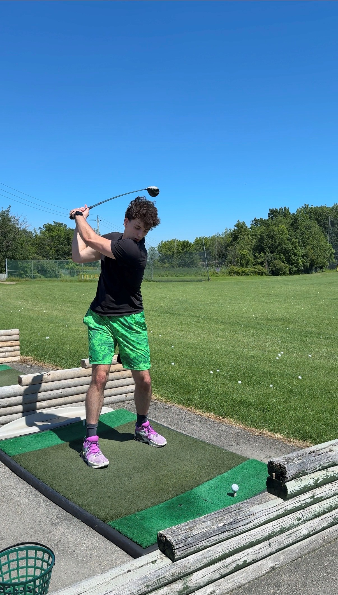

Hi, I'm Nikola Anastasijevic.
Nice to meet you.
I'm a software development student at Mohawk College (Software Development 559), currently on my first co-op term at MBPSD. I previously studied Computer Science at Brock University for three semesters, then switched because I wanted a more hands-on path that felt like a better fit.
Outside of work and class, I build projects constantly. I like building any kind of software, but web apps are my strongest area, especially with Next.js. I also built an automated trading bot that reads live chart data and makes its own decisions, which pushed me to think more seriously about reliability and risk.
What ties everything together is that I like finishing what I start. I care about shipping real things, learning from real users, and improving every version instead of leaving ideas half-done in a repo.

How I actually work.
Not a mission statement, just what usually describes me best when I am working on something real.
Ship it, then sharpen it.
A finished v1 teaches me more than a perfect plan. I would rather ship, learn, and improve than over-plan and never launch.
Assume it'll break — then find out where.
My co-op experience changed how I build. I naturally think about failure cases first now, which makes the normal path much stronger.
Own the whole slice.
I like taking a feature from database to deployed UI. Understanding every layer helps me avoid the handoff bugs that usually appear at the seams.
Learn by building something real.
Most tools on my stack are there because I built real projects with them. It sticks better, and I always end up with something useful to show.
Tools I actually use.
A stack shaped by co-op work and personal builds, not a list of buzzwords.
Languages
Frontend
Backend & Infra
Currently learning
When I'm not in front of a compiler.
Tech skills matter, but this is usually what people remember most about me.
Cars and racing
Cars are a huge part of my life, especially American muscle. I follow F1, IndyCar, NASCAR, and MotoGP, and I race myself too.
Training and sports
I train often, spend a lot of time in the gym, and play pretty much every sport I can.
Gaming
I play a lot of games, especially Dead by Daylight and Geometry Dash.
Outdoors
I also love hiking, snowboarding, and climbing mountains whenever I can.
Where I've been.
My first co-op work term, with two terms back to back through December. I support testing and quality workflows on real products and collaborate closely with the team to keep releases stable.
Designing and building full-stack applications end to end — from database schema to deployed UI — across web and mobile, alongside a Python-based automated trading system.
Focused on practical software development with project-based learning. Before Mohawk, I completed three semesters of Computer Science at Brock University and then switched paths.
Think we'd get along?
Take a look at what I've built, or skip straight to reaching out.